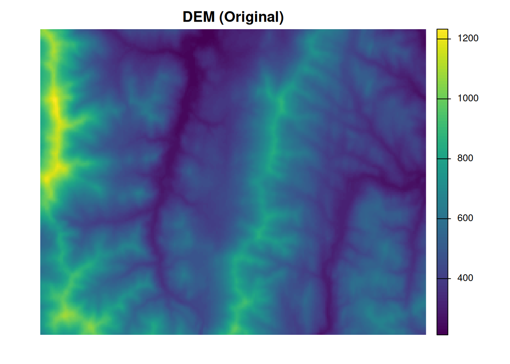
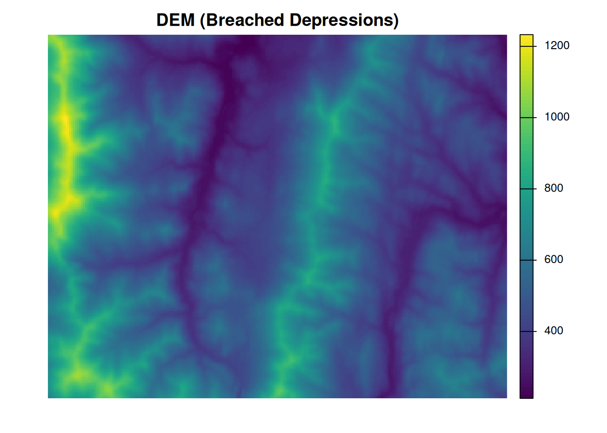
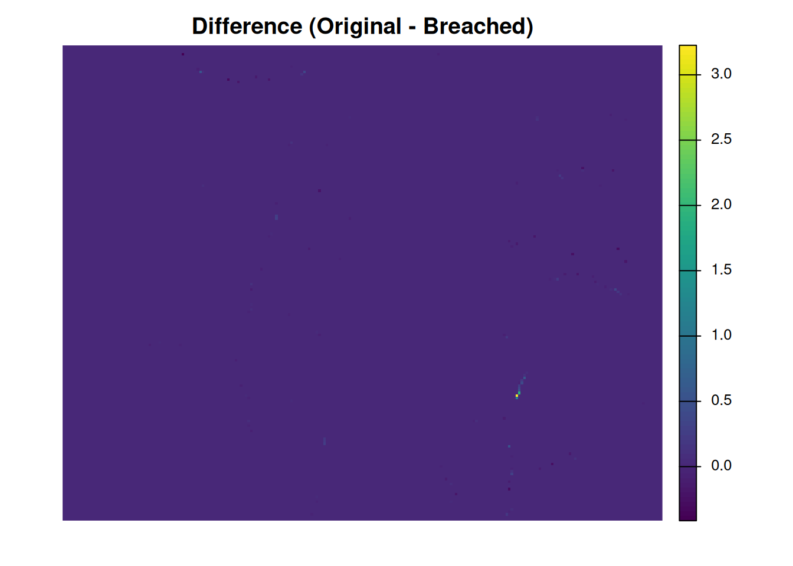
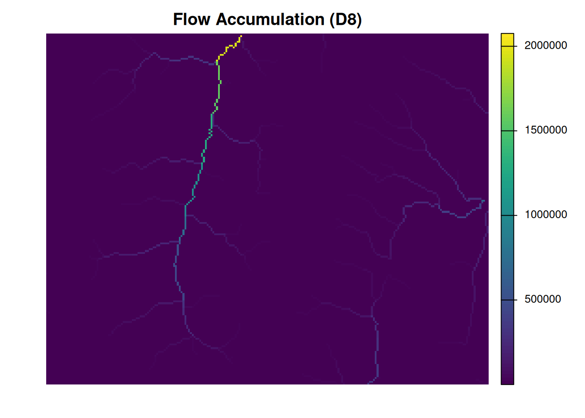
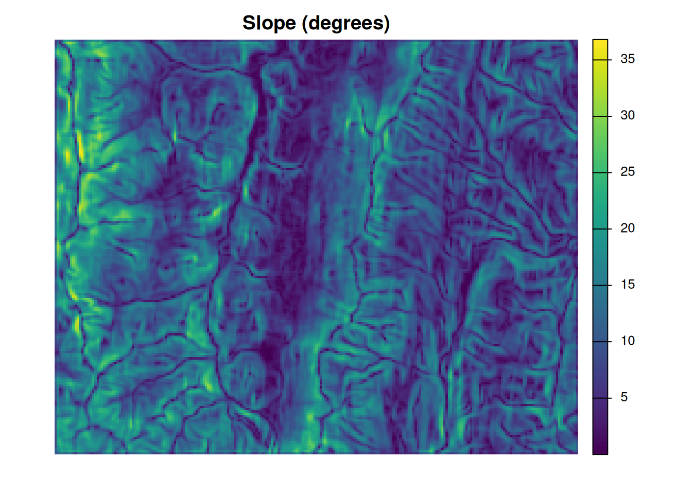
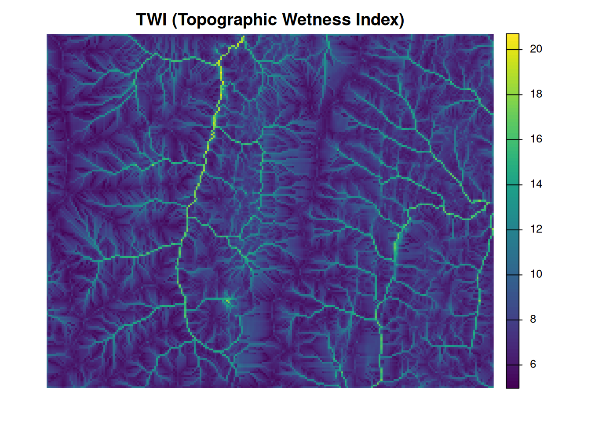

graph TD
A[DEMの読み込み] --> B[Depression breaching]
B --> C[Flow Accumulationの計算]
C --> D[傾斜の計算]
D --> E[TWIの計算]
地形湿潤指数の計算
概要
whiteboxというRパッケージを使って、DEM (デジタル標高モデル)から地形湿潤指数 (Topographic Wetness Index, TWI)を計算する方法を示します。
解析の流れ
解析の流れは以下のようになります。
セットアップ
初めてwhiteboxを使用する場合は、以下のコードを実行して、WhiteboxToolsをインストールしてください。 Rで直接計算をするわけではなく、外部のWhiteboxToolsを使用して計算が行われます。 つまり、RはWhiteboxToolsを呼び出すためのインターフェースとして機能します。
# 初回だけ必要に応じて実行する
# renv::install("terra")
# renv::install("whitebox")
whitebox::install_whitebox()ライブラリを読み込みます。 terraパッケージは、ラスターデータの操作に使用します。 whiteboxパッケージは、WhiteboxToolsをRから呼び出すために使用します。
library(terra)terra 1.9.34library(whitebox)
# WhiteboxTools の実行可能ファイルのパスを取得し、存在を確認
wbt_path <- wbt_exe_path(shell_quote = FALSE)
if (!whitebox::check_whitebox_binary()) {
stop(
"WhiteboxTools executable was not found: ",
wbt_path,
"\n",
"Run whitebox::install_whitebox() once, then rerun this notebook.",
call. = FALSE
)
}
# WhiteboxToolsのパスとバージョンを確認
wbt_path[1] "/home/runner/.local/share/R/whitebox/WBT/whitebox_tools"whitebox::wbt_version()
# 出力ディレクトリの作成
output_dir <- "output"
dir.create(output_dir, showWarnings = FALSE)DEMの読み込みと可視化
今回は、whiteboxパッケージのサンプルデータを使用して解析を行います。
dem_path <- sample_dem_data()
dem <- rast(dem_path)
print(dem)class : SpatRaster
size : 188, 237, 1 (nrow, ncol, nlyr)
resolution : 90, 90 (x, y)
extent : 664692, 686022, 4878904, 4895824 (xmin, xmax, ymin, ymax)
coord. ref. : NAD83 / UTM zone 18N (EPSG:26918)
source : DEM.tif
name : DEM
min value : 212.229813
max value : 1232.878296# 可視化
plot(dem, axes = FALSE, main = "DEM (Original)")
重要座標系
座標系は必ず投影座標系（Projected Coordinate System）である必要があります。 地理座標系（Geographic Coordinate System）では、距離や面積の計算が正確に行えないため、TWIの計算結果が不正確になる可能性があります。
以下のコードで座標系が設定されているかどうか、投影座標かどうかを確認できます。
# 座標系の確認
if (!nzchar(crs(dem))) {
stop("DEM has no coordinate reference system.", call. = FALSE)
}
# 投影座標系かどうかの確認
if (isTRUE(is.lonlat(dem))) {
stop("DEM must use a projected coordinate reference system.", call. = FALSE)
}Depression breaching
最初に、DEMの凹地を除去するために、Depression breachingを行います。 この処理は、流域解析の前処理として重要です。
wbt_breach_depressions_least_cost()関数を使用することで、depression breachingを行うことができます。 必要な引数は以下の通りです。
dem: 入力DEMのファイルパスoutput: 出力ファイルのパスdist: 凹地を除去するための距離（単位はDEMの座標系に依存します）
fillはデフォルトでTRUEに設定されており、depression breaching後のDEMの凹地を埋める処理を行います。 基本的にはfill = TRUEのままで問題なさそうです。
wbt_breach_depressions_least_cost(
dem = dem_path,
output = file.path(output_dir, "dem_breached.tif"),
dist = 20,
fill = TRUE
)
dem_breached <- rast(file.path(output_dir, "dem_breached.tif"))元のDEMと比較します。
# breached DEMと元のDEMを比較する
local({
old_mar <- par("mar")
on.exit(par(mar = old_mar), add = TRUE)
par(mar = c(2, 1, 2, 1))
plot(dem, axes = FALSE, main = "DEM (Original)")
plot(dem_breached, axes = FALSE, main = "DEM (Breached Depressions)")
plot(
dem - dem_breached,
axes = FALSE,
main = "Difference (Original - Breached)"
)
})


今回のデータでは、凹地の除去による標高の変化はほとんどありませんでした。
Flow Accumulation
次に、flow accumulationを計算します。 これは、水流の蓄積量を計算する処理です。
wbt_d8_flow_accumulation(
input = file.path(output_dir, "dem_breached.tif"),
output = file.path(output_dir, "d8_accum.tif"),
out_type = "specific contributing area",
log = FALSE
)
dem_breached_d8_accum <- rast(file.path(
output_dir,
"d8_accum.tif"
))
plot(dem_breached_d8_accum, axes = FALSE, main = "Flow Accumulation (D8)")
これはD8アルゴリズムを使用して流域の蓄積量を計算します。 out_type = "specific contributing area"は、比集水面積（単位幅あたりの寄与集水面積）を出力することを意味します。
ほかには、D-infinity flow accumulationを計算するwbt_d_inf_flow_accumulation()関数、FD8 flow accumulationを計算するwbt_fd8_flow_accumulation()関数などもあります。 私もまだ勉強中ですが、解析によって使い分ける必要があるようです。
Slope
次に、傾斜を計算します。 wbt_slope()関数を使用して、DEMから傾斜を計算します。
wbt_slope(
dem = file.path(output_dir, "dem_breached.tif"),
output = file.path(output_dir, "d8_slope.tif"),
units = "degrees"
)
dem_breached_slope <- rast(file.path(
output_dir,
"d8_slope.tif"
))
plot(dem_breached_slope, axes = FALSE, main = "Slope (degrees)")
TWI (Topographic Wetness Index)
TWIを計算するには、wbt_wetness_index()関数を使用します。この関数は、流域の蓄積量と傾斜を入力として受け取り、TWIを計算します。
wbt_wetness_index(
sca = file.path(output_dir, "d8_accum.tif"),
slope = file.path(output_dir, "d8_slope.tif"),
output = file.path(output_dir, "d8_twi.tif")
)
twi <- rast(file.path(output_dir, "d8_twi.tif"))
plot(twi, axes = FALSE, main = "TWI (Topographic Wetness Index)")